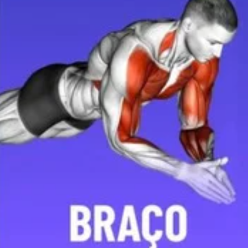

-
.png)
Flexão de braço inclinada
Como fazer: com os braços esticados à frente do corpo, apoiar as mãos na superfície, em uma distância um pouco maior que a largura dos ombros. Manter os pés no chão, as pernas esticadas e a coluna reta. Contrair o abdômen e flexionar os cotovelos até que o peito encoste na superfície e retornar à posição inicial. Pode-se fazer 10 séries de 10 repetições cada, descansando de 60 a 90 segundos entre as séries.
-

Tríceps no banco
Como fazer: Primeiro, sente-se na beira de um banco. Deixe as mãos paralelas aos ombros, com as palmas firmes na extremidade do banco. Mantenha os joelhos flexionados a 90º.Então, segure firmemente no banco. Mantenha o tronco firme e encaixado. Contraia os glúteos e dê uns passinhos para a frente, deixando os braços totalmente estendidos e sustentando o peso do corpo.Em seguida, flexione os cotovelos e abaixe o corpo em frente ao banco, formando um ângulo de 90º.faça 10 séries de 10 repetições
-
.png)
Agachamento
Como fazer: Em pé e com o corpo ereto, deixe as pernas abertas na direção do quadril e os pés na direção dos ombros, mantendo os braços com as mãos juntas em frente ao corpo e na altura do tórax. Abaixe os quadris e suba novamente, com os glúteos contraídos. Tente manter a postura ao longo de todo o exercício. Faça 3 séries de 15.